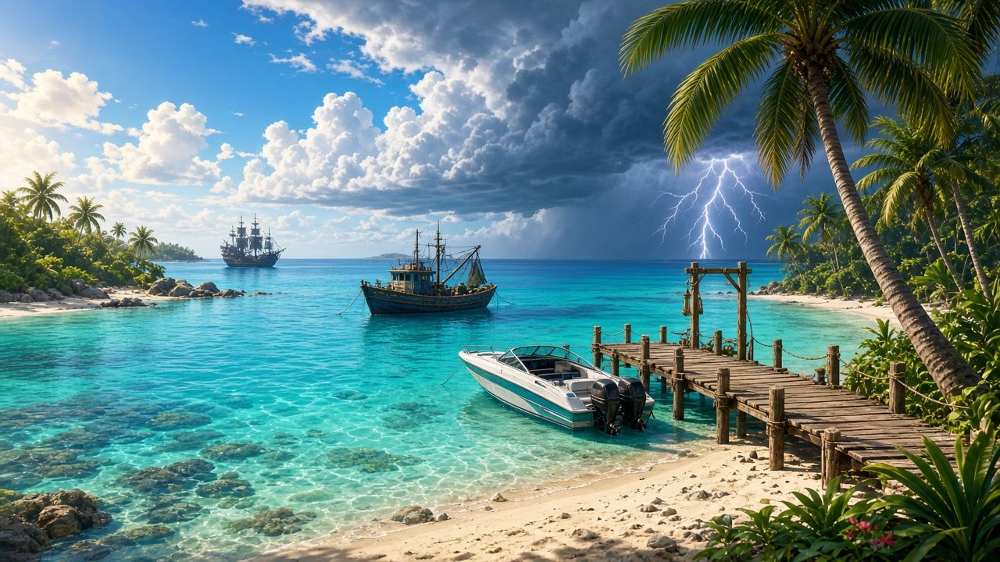

Islands
Every island is unique
Tropical islands and winter islands rise out of the ocean. Some hold fishing villages, with huts, jetties, and boats along the beach.
- Sandy
- Forested
- Rocky
- Volcanic
- Lush
- Atoll
- Tundra
- Taiga
- Glacier

Open world on an endless ocean
Explore an endless ocean. Discover. Survive. Adventure.
The demo is not available yet.
In-game
About the game
Ever Seas is an open-world game on an endless ocean. Sail, dive, build, gather resources, and discover mysterious islands in a world that never ends. Tropical shores give way to winter islands and an ice sea under the aurora.
Before you set sail, choose a graphics quality and begin the voyage. Built in Godot 4. Coming to PC.

Islands
Tropical islands and winter islands rise out of the ocean. Some hold fishing villages, with huts, jetties, and boats along the beach.
Diving
Dive among coral reefs in clear water along the shore. Kelp forests, hydrothermal vents, and bioluminescence wait in deeper water, and you can place underwater bases with interiors.


The ice sea
Further north, the sea turns to ice. Icebergs and floes drift under the night sky, and the aurora lights the winter islands.
World
In-game views of the ocean, the islands, the reefs, and the ice sea.
Adventures
The sea is never empty. Finds wait around your boat, and some islands hide a reason to keep sailing.
A bottle on the waves can hold a treasure map, and lead you to a cache out on the open water.
A castaway on a raft may ask for fish, and repay your help with a map.
Crates adrift on the sea hold supplies, and sometimes a map of their own.
Dive for relics resting on the sea floor, and gather a set from the deep.
Stay close to a giant clam until it opens and gives up its pearls.
A cargo hunt can send you far across the water toward a marked cache waiting to be found.
On some islands, golden idols rest along the shore, waiting to be found.
A stone cairn on an island can start a treasure hunt at sea.
Features
Sail, dive, gather, and make your way across a sea that does not end.
An endless ocean. Set a course in any direction and the sea keeps going.
Tropical islands and winter islands — every one unique — with fishing villages along some shores.
Coral reefs along the shore, kelp forests, hydrothermal vents, and bioluminescence, plus underwater bases with interiors.
Four boats to take onto the water.
Make gear from gathered wood, stone, and fish — sails, fishing nets, oxygen tanks, lanterns, and more.
Sell the resources you gather. Trading, market prices, and an economy are part of the voyage.
Bottles, rafts, crates, relics, clams, cargo hunts, island idols, and cairns wait as you sail and go ashore.
Achievements mark what you discover and complete, including Adventurer, Relic Hunter, and Idol Finder.
On the companion island, choose a companion — a woman or a man — to travel with you.
Day turns to night, with warmer light around sunrise and sunset. Weather shifts between clear skies, fog, and storms, and the aurora can light the ice sea.
Rare bandits are out on the ocean.
A start menu lets you choose a graphics quality and set sail when you are ready to begin the voyage.
PC
Ever Seas is in development for PC, with a focus on visual quality.
The demo is not available yet.